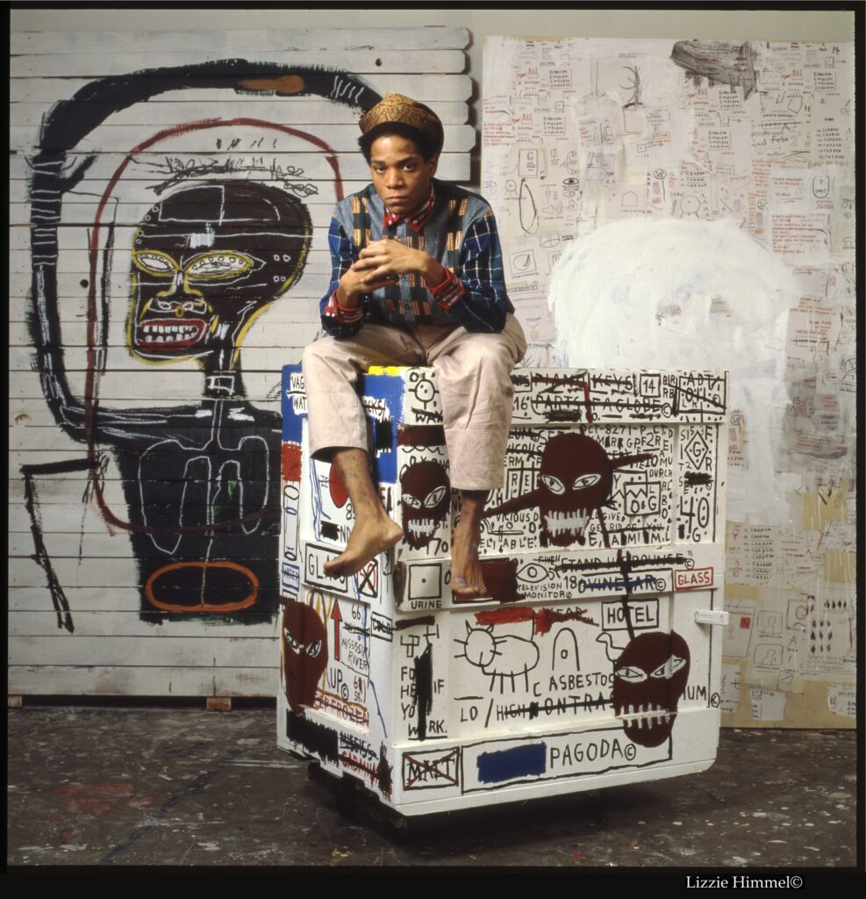

ARTIST / NEW YORK / 1960—1988
JEAN-MICHELBASQUIAT
A language of his own.
Words become images.
Figures become symbols.
A world that refuses to sit still.

PAINTING · DRAWING · LANGUAGE
01 / LIFE & LEGACY
From the street.
Into art history.
Born in Brooklyn in 1960, Jean-Michel Basquiat moved from the downtown New York scene into international recognition. His paintings bring together words, anatomy, music, and Black cultural history.
Explore the life behind a visual language that continues to resonate.
Explore life & legacy ↗1960
Brooklyn1978
SAMO© era1982
International rise1988
New York
Brooklyn1978
SAMO© era1982
International rise1988
New York
02 / SELECTED WORKS
Look closer.
Bodies, words, and questions of power. Two works from 1981.
View selected works ↗Untitled
1981ANATOMY / FIGURES / IDENTITY

Irony of Negro Policeman
1981FIGURE / LANGUAGE / POWER

03 / EXHIBITIONS · ON VIEW
Figures.
Signs.
Symbols.
Pérez Art Museum Miami
June 25, 2026 — June 6, 2027
Ten works from the Kenneth C. Griffin Collection, brought together through the artist’s figures, language, and symbols.
View exhibitions ↗